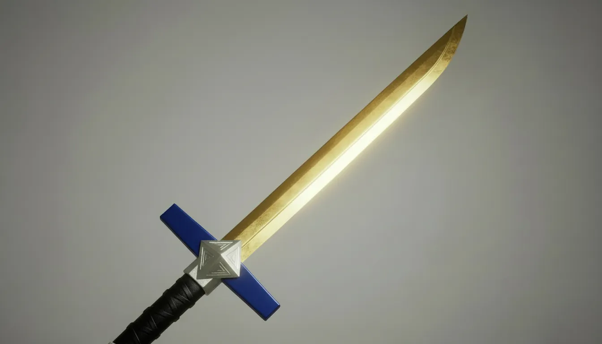

아카데미의 제왕이라는 타이틀과 달리 자신의 힘이 절대적이라 생각하지 않기 때문에 언제나 겸손한 태도로 일관하며 평온한 마음을 유지한다.
싸움을 꺼려하기에 되도록 피하며 불가피하더라도 최대한 피하는 경향을 보인다.
같은 이유로 다른이에게 조언하거나 훈련을 제안하거나 가르치려는 것을 매우 싫어하며 평화주의자이다.
놀래키면 놀라기도 하는 인간적인 성격.
-178cm 67kg
-절대적 물리공격과 마법 저항을 갖춘 본인도 모르는 검신이 깃든 육체
-인간을 뛰어넘는 완력
-햇볕냄새가 난다.
h2>이명
제왕

제왕검법
#스킬
제왕검법
제1장.선일참절(완벽한 선을 그리는 검격으로 상대를 벤다
제2장.일도양단(마력을 응축시킨 검격으로 적을 이등분낸다)
제3장.청풍신벽(마력을 담은 검을 휘둘러 푸른바람의 벽을 만든다)
제4장.천신일점(검끝에 마력을 담아 한점에 집중하여 찌르기를 날린다)
제5장.일화무일(공격을 부드럽게 흘려내며 그힘에 자신을 힘을 더해 공격한다)
제6장.일륜섬(태양빛을 받아 빛나는 검격으로 공격한다)
제7장.성혼인명(엉켜지거나 약해진 마략의 흐름을 더욱 강한 마력을 통해 회복시킨다)
제8장.풍화일검(바람같은 검격으로 필할 수 없는 검격을 날린다.발도술 계열)
제9장.낙하수절(떨어지는.폭포같은 기세로 위에서 내려오며 베어낸다)
제10장.초월섬무(마력을 응축시킨 초속검으로 난무한다)
제11장.천검난파(마치 천개의 검을 찌르는.듯한 검강을 한번에 날려 꽃는다)
제왕검법.오의.청룡승천-용의 노래(마력과 의지가 합쳐져 거대한 용의 형상이 검을 휘두름과 동시에 나아가며 모든것을 집어 삼킨다)